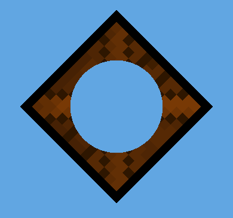

Sprite Renderer
Sprite Renderer 组件用于渲染__精灵__并控制其在 2D 和 3D 项目场景中的可视化效果。
创建精灵 (GameObject > 2D Object > Sprite) 时，Unity 会自动创建一个附加了 Sprite Renderer 组件的游戏对象。还可以通过 Components 菜单 (Component > Rendering > Sprite Renderer) 将该组件添加到现有的游戏对象。
属性
| 属性 | 功能 |
|---|---|
| Sprite | 定义该组件应渲染的精灵纹理。单击右侧的小圆点可打开对象选择器窗口，然后从可用精灵资源列表中进行选择。 |
| Color | 定义精灵的顶点颜色，用于对精灵的图像进行着色或重新着色。使用拾色器设置渲染的精灵纹理的顶点颜色。请参阅此表下方的颜色部分以查看示例。 |
| Flip | 沿选定的轴翻转精灵纹理。这不会翻转游戏对象的变换位置。 |
| Material | 定义用于渲染精灵纹理的材质。 |
| Draw Mode | 定义精灵尺寸发生变化时的缩放方式。从下拉框中选择以下选项之一。 |
| Simple | 当尺寸发生变化时，整个图像都缩放。这是默认选项。 |
| Sliced | 如果精灵为 9 切片精灵，选择此模式。 |
| Size （Sliced 或 Tiled） | 输入精灵的新 Width 和 Height 值以正确缩放 9 切片精灵。在应用 9 切片属性时，也可使用矩形变换组件工具来缩放精灵。 |
| Tiled | 默认情况下，此模式会使 9 切片精灵的中间部分在精灵尺寸发生变化时平铺而不是缩放。使用 Tile Mode 可控制精灵的平铺行为。 |
| Continuous | 这是默认的 Tile Mode 设置。在 Continuous 模式下，当精灵尺寸发生变化时，中间部分会均匀地平铺。 |
| Adaptive | 在 Adaptive 模式下，精灵纹理在尺寸发生变化时会拉伸，类似于 Simple 模式。当更改的尺寸的缩放大小达到 Stretch Value 时，中间部分开始平铺。 |
| Stretch Value | 使用滑动条设置 0 到 1 之间的值。最大值为 1，表示原始精灵缩放的两倍。 |
| Sorting Layer | 设置精灵的排序图层 (Sorting Layer)，此图层用于控制渲染期间的精灵优先级。从下拉框中选择现有的排序图层，或创建新的排序图层。 |
| Order In Layer | 设置精灵在其排序图层中的渲染优先级。首先渲染编号较低的精灵，编号较高的精灵叠加在前者之上。 |
| Mask Interaction | 设置精灵渲染器在与精灵遮罩交互时的行为方式。请参阅下面的遮罩交互 (Mask Interaction) 部分中不同选项的示例。 |
| None | 精灵渲染器不与场景中的任何精灵遮罩交互。这是默认选项。 |
| Visible Inside Mask | 精灵在精灵遮罩覆盖精灵的地方是可见的，而在遮罩外部不可见。 |
| Visible Outside Mask | 精灵在精灵遮罩外部是可见的，而在遮罩内部不可见。精灵遮罩会隐藏其覆盖的精灵部分。 |
| Sprite Sort Point | 在计算精灵和摄像机之间的距离时，在精灵中心 (Center) 或其轴心点 (Pivot Point) 之间进行选择。请参阅精灵排序点 (Sprite Sort Point) 部分以了解更多详细信息。 |
详细信息
颜色 (Color)
下图显示了在__精灵渲染器 (Sprite Renderer)__ 的 Color 设置中更改 RGB 值的效果。要更改精灵的不透明度，请更改其 Color 属性的 Alpha (A) 通道的值。
材质 (Material)
使用材质的材质和着色器设置可控制 Unity 如何渲染材质。请参阅材质、着色器和纹理以了解有关这些设置的更多信息。
新创建的精灵的默认材质为 Sprites - Default。场景光照不会影响此默认精灵。要让精灵对光照做出反应，请指定材质 Default - Diffuse。要执行此操作，请单击 Material 字段旁边的小圆圈以显示对象选择器窗口，然后选择 Default-Diffuse 材质。
遮罩交互 (Mask Interaction)
遮罩交互可控制精灵渲染器与精灵遮罩交互的方式。从下拉菜单中选择 Visible Inside Mask 或 Visible Outside Mask。以下示例演示了使用方形精灵和圆形遮罩时每个选项的影响：
要与精灵遮罩进行交互，请从下拉菜单中选择 Visible Inside Mask 或 Visible Outside Mask。

精灵排序点 (Sprite Sort Point)
仅当精灵渲染器的 Draw Mode 设置为 Simple 时，此属性才可用。
在 2D 项目中，主摄像机 (Main Camera) 默认设置为正交投影 (Orthographic Projection) 模式。在此模式下，Unity 按照精灵相对于摄像机的距离（沿着摄像机视图的方向）的顺序渲染精灵。
默认情况下，精灵的 Sort Point 设置为其 Center，因此 Unity 会测量摄像机的变换位置与精灵的中心之间的距离，以确定它们的渲染顺序。
如果要将 Sort Point 设置为除 Center 以外的值，请选择 Pivot 选项。在 Sprite Editor 中可编辑精灵的 Pivot 位置。
- 2018–10–05 添加了新功能的定义。
- 在 2017.3 版中添加了使用轴心位置对基于精灵的渲染器进行排序的功能 2017.3 版中的新功能